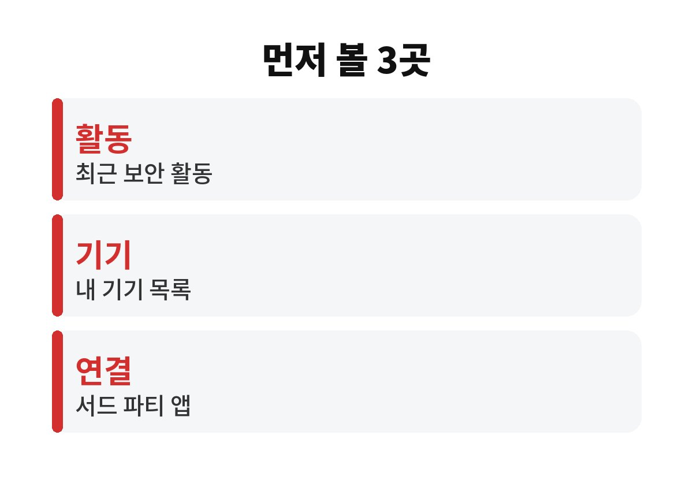
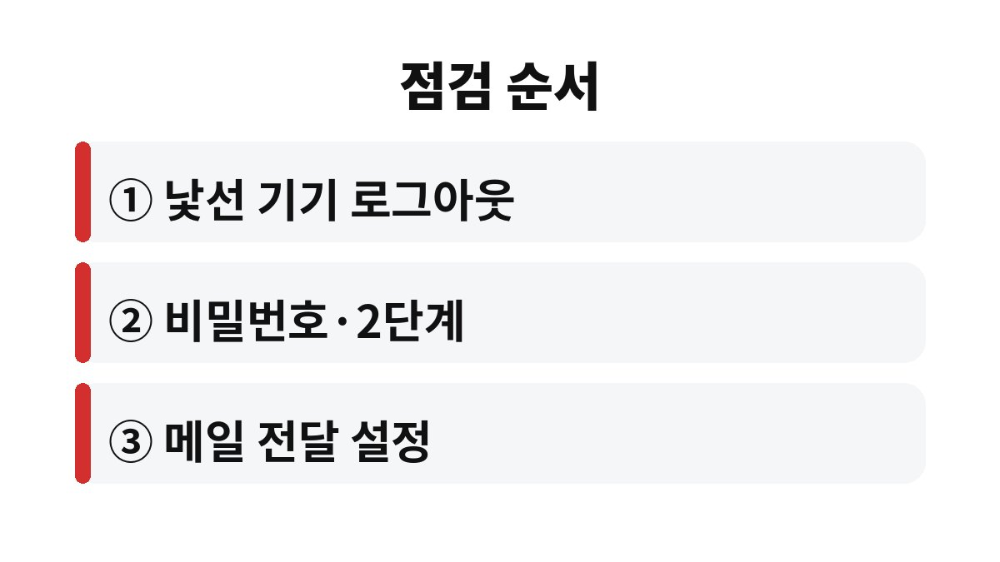

구글 계정 해킹 의심이 들면 비밀번호부터 바꾸기 전에 로그인된 기기 목록과 최근 보안 활동을 먼저 보는 쪽이 순서에 맞다.
비밀번호만 바꾸고 낯선 기기를 그대로 두면 그 기기가 계속 열려 있을 수 있기 때문이다.
2026년 11월 기준 구글 계정 메뉴 이름으로 정리했다.
비밀번호 변경은 필요하지만 거기서 멈추면 절반만 한 셈이다.
이미 로그인된 기기, 외부 앱에 준 접근 권한, 메일 전달 설정은 비밀번호와 별개로 남아 있을 수 있다.
예를 들어 오래전 쓰던 공용 컴퓨터에서 로그아웃하지 않고 나왔다면, 그 기기는 새 비밀번호를 만든 뒤에도 목록에 남아 있는지 직접 봐야 한다.
알림 메일이 피싱인 경우가 실제로 많아서 메일 속 버튼은 누르지 않는 것이 안전하다.
그래도 알림 하나만 보고 무시하지 않고, 구글 앱이나 주소창에 직접 입력해 들어간 계정 화면에서 같은 기록이 있는지 확인한다.
구글 계정에는 메일과 사진, 문서뿐 아니라 다른 사이트의 구글 로그인도 묶여 있다.
메일함이 뚫리면 다른 서비스의 비밀번호 재설정 메일까지 가로챌 수 있다.
그래서 구글 계정은 쇼핑몰 계정보다 한 단계 높은 열쇠로 보고 관리한다.
다만 로그인 알림이 한 번 왔다는 이유만으로 해킹이라고 단정할 필요는 없다.
새 기기나 새 브라우저에서 내가 로그인해도 같은 알림이 오기 때문이다.
구글 계정 > 보안 화면 안에 확인할 항목이 모여 있다.
메뉴 이름은 앱 버전에 따라 조금씩 다르지만 위치는 대체로 같다.
표의 이상 신호에 해당하는 줄이 하나라도 있으면 아래 순서로 넘어가고, 하나도 없으면 2단계 인증이 켜져 있는지만 확인해도 된다.
| 확인 위치 | 볼 것 | 이상 신호 |
|---|---|---|
| 보안 > 최근 보안 활동 | 로그인 시각과 기기 | 내가 쓰지 않은 시간대의 로그인 |
| 보안 > 내 기기 | 로그인된 기기 목록 | 처음 보는 기종이나 오래전 기기 |
| 보안 > 2단계 인증 | 복구용 전화번호와 이메일 | 내 것이 아닌 연락처 |
| 보안 > 서드 파티 연결 | 접근 권한을 준 앱 | 쓰지 않는 앱의 메일·드라이브 접근 |

의심이 들 때는 비밀번호를 바꾸기 전에 기록부터 눌러 본다.
화면을 캡처해 두면 이상 활동이 실제로 있었는지 나중에 비교하기 쉽다.
기기 목록에서 로그아웃을 누르면 그 기기에서는 다시 비밀번호를 입력해야 하므로, 내가 쓰는 기기를 실수로 눌러도 큰 문제는 아니다.
메일 전달 설정은 놓치기 쉬운 부분이다. 전달 주소가 하나 숨어 있으면 비밀번호를 바꿔도 새 메일이 계속 밖으로 나간다.

이미 로그인 자체가 막혔다면 위 순서를 밟을 수 없다.
그때는 로그인 화면의 계정 복구 절차부터 진행하고, 복구 뒤에 같은 비밀번호를 쓰던 다른 사이트의 비밀번호도 함께 바꾼다.
나는 비밀번호를 사이트마다 다르게 두는 것이 번거로워도 사고가 났을 때 훨씬 덜 번진다고 본다.
복구 정보가 오래된 전화번호로 남아 있으면 정작 필요할 때 인증 번호를 받지 못한다.
평소에 복구용 번호와 이메일을 한 번 열어 현재 쓰는 것인지 확인해 두면 그런 일을 줄일 수 있다.
오늘 할 일은 내 기기 목록을 한 번 열어 보는 것이다.
목록이 깨끗하다면 그것만으로도 구글 계정 해킹 의심 하나를 지운 셈이고, 석 달쯤 뒤에 다시 열어 보면 충분하다.
계정 도용으로 금전 피해까지 이어졌다면 점검보다 먼저 해당 금융회사와 경찰에 알리는 편이 빠르다.
참고 자료: Google 계정 고객센터 「계정 보안 강화하기」(2026년 11월 확인)
※ 2026년 기준 공식 안내를 바탕으로 정리한 글이며, 기기·앱 버전에 따라 메뉴 이름이 다를 수 있다.